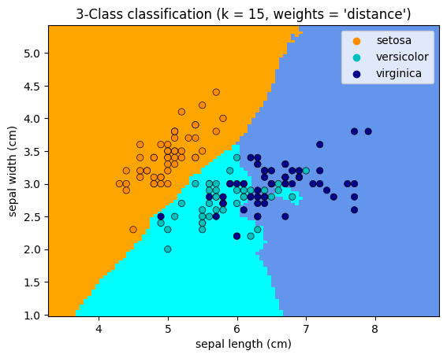

import matplotlib.pyplot as plt
import seaborn as sns
from matplotlib.colors import ListedColormap
from sklearn import neighbors, datasets
from sklearn.inspection import DecisionBoundaryDisplay
n_neighbors = 15
# import some data to play with
iris = datasets.load_iris()
# we only take the first two features. We could avoid this ugly
# slicing by using a two-dim dataset
X = iris.data[:, :2]
y = iris.target
# Create color maps
cmap_light = ListedColormap(["orange", "cyan", "cornflowerblue"])
cmap_bold = ["darkorange", "c", "darkblue"]
for n_neighbors in [1,2,3,5,10,15,20,len(y)]:
for weights in ["uniform", "distance"]:
# we create an instance of Neighbours Classifier and fit the data.
clf = neighbors.KNeighborsClassifier(n_neighbors, weights=weights)
clf.fit(X, y)
_, ax = plt.subplots()
DecisionBoundaryDisplay.from_estimator(
clf,
X,
cmap=cmap_light,
ax=ax,
response_method="predict",
plot_method="pcolormesh",
xlabel=iris.feature_names[0],
ylabel=iris.feature_names[1],
shading="auto",
)
# Plot also the training points
sns.scatterplot(
x=X[:, 0],
y=X[:, 1],
hue=iris.target_names[y],
palette=cmap_bold,
alpha=1.0,
edgecolor="black",
)
plt.title(
"3-Class classification (k = %i, weights = '%s')" % (n_neighbors, weights)
)
plt.show()


